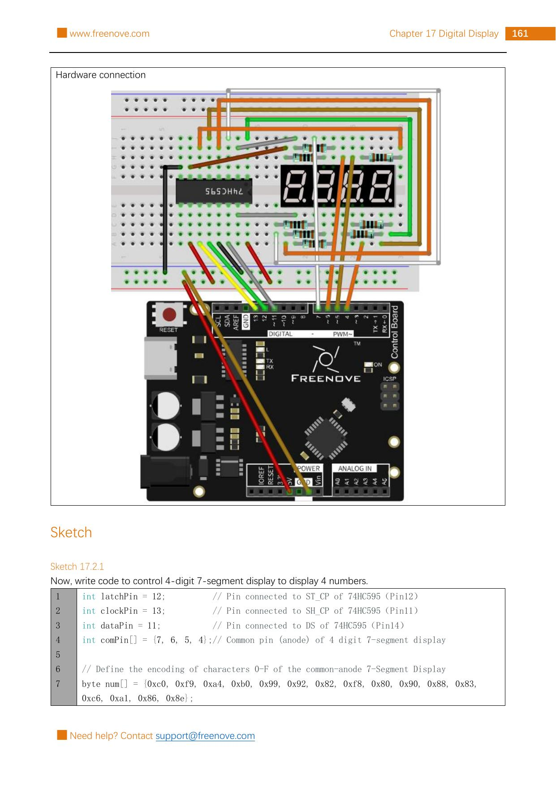

Important: this lesson is for the Freenove kit’s common-anode 4-digit display and the exact source layout. Four-digit packages that look similar can have a different leg order or a different common type. Do not substitute an unknown display. Use only USB power and the board’s 5 V/GND connections shown in the reference circuit—never wall power, a battery pack, or a higher-voltage load.
Build it, one check at a time
Step 1 — Study the source circuit first
Keep USB unplugged. The unchanged Freenove reference page below contains Project 17.2’s hardware connection and its 4-digit display. This design shares eight cathode routes across every digit, then selects one common-anode digit at a time. That quick turn-taking is called multiplexing.

Reference image: Freenove Ultimate Starter Kit, Tutorial.pdf, Chapter 17, Project 17.2, PDF page 165 / printed page 161. Rasterized unchanged from the permitted source pack under CC BY-NC-SA 3.0.
Step 2 — Power the shift register safely
Place the 74HC595 across the breadboard centre gap, with its notch matching the reference image. Connect pin 16 (VCC) and pin 10 (MR) to 5 V. Connect pin 8 (GND) and pin 13 (OE) to GND. These connections power the chip, keep reset inactive, and enable its outputs.
Count IC pins from the notch or dot. Do not rely on the text direction on the chip. Compare each power wire to the source image before reconnecting USB.
Step 3 — Add the control wires and shared segment routes
Connect Arduino 11 → 74HC595 14 (DS), Arduino 13 → 74HC595 11 (SH_CP), and Arduino 12 → 74HC595 12 (ST_CP). Then follow the source image exactly from the 74HC595’s Q0–Q7 outputs to the display’s eight shared cathode/segment paths. Put one 220 Ω resistor in each of those eight paths.
Make one shared segment route at a time: source Q0 to its named display segment through one 220 Ω resistor, then mark that route on the printed diagram before starting Q1. Continue through Q7. After all eight routes are complete, ask your supervising adult to compare the eight source labels and resistor positions with you while USB is still unplugged. Do not identify display legs by physical position; use the source’s display pin diagram and coloured connection drawing.
Never wire a segment directly to a 74HC595 output and never combine the eight resistors into one shared resistor.
Step 4 — Add the four digit-select wires
The display’s four common-anode ports decide which digit can light. Follow the source drawing exactly and connect Arduino 7, 6, 5, and 4 to the display’s four common ports in that order. The sketch switches all four off, turns on only one, sends that digit’s segment pattern, then moves to the next digit.
Keep a paper checklist of Q0–Q7 and D7–D4; do not power the display until all twelve boxes are checked. Before reconnecting USB, confirm: the board is still unplugged, every display route has one resistor, and no display leg is being identified only by its physical position.
Only one common port should be high during a scan. This prevents two digits from fighting to show the same pattern. Check each display port against the reference image before USB is connected.
Step 5 — Upload the seconds counter
Reconnect USB, select your Uno-compatible board and serial port in Arduino IDE, then upload this original sketch. It keeps refreshing the four digits while millis() measures elapsed time, so it needs no extra timer library. The source-validated display encodings, pin assignments, scan order, 5 ms dwell, and blanking pattern are retained.
const int latchPin = 12;
const int clockPin = 13;
const int dataPin = 11;
const int commonPins[] = {7, 6, 5, 4};
const byte digits[] = {
0xc0, 0xf9, 0xa4, 0xb0, 0x99,
0x92, 0x82, 0xf8, 0x80, 0x90
};
unsigned long startedAt;
void writeData(byte value) {
digitalWrite(latchPin, LOW);
shiftOut(dataPin, clockPin, LSBFIRST, value);
digitalWrite(latchPin, HIGH);
}
void chooseCommon(byte selected) {
for (byte i = 0; i < 4; i++) {
digitalWrite(commonPins[i], LOW);
}
digitalWrite(commonPins[selected], HIGH);
}
void setup() {
pinMode(latchPin, OUTPUT);
pinMode(clockPin, OUTPUT);
pinMode(dataPin, OUTPUT);
for (byte i = 0; i < 4; i++) {
pinMode(commonPins[i], OUTPUT);
}
startedAt = millis();
}
void loop() {
unsigned long elapsedSeconds = (millis() - startedAt) / 1000UL;
unsigned int number = elapsedSeconds % 10000UL;
byte shown[] = {
number / 1000,
number / 100 % 10,
number / 10 % 10,
number % 10
};
for (byte place = 0; place < 4; place++) {
chooseCommon(place);
byte digit = shown[place];
writeData(digits[digit]);
delay(5);
writeData(0xff);
}
}
What the code means: the four digits share the same eight segment paths, but each has its own common-anode port. The loop shows one place for 5 ms, blanks the segments, then rapidly scans the next place. Your eyes blend those fast flashes into a steady four-digit number. You should see 0000, 0001, 0002, and onward; after 9999 it starts over at 0000.
If the display is blank, scrambled, or one digit is missing, unplug USB first. Recheck the display type, its source-specific pin map, all eight 220 Ω resistors, 74HC595 power pins, the 11/13/12 control wires, and the 7/6/5/4 common-port order. Do not rearrange display legs while powered.
Tiny challenge
Predict what should appear at 42 seconds, then wait for it. Find the four expressions that split number into thousands, hundreds, tens, and ones. Why does the sketch blank the segment data with 0xff before it scans another digit?
The unchanged reference image and upstream material are from Freenove’s Ultimate Starter Kit and are used under CC BY-NC-SA 3.0. Attribution, noncommercial, and ShareAlike requirements apply.